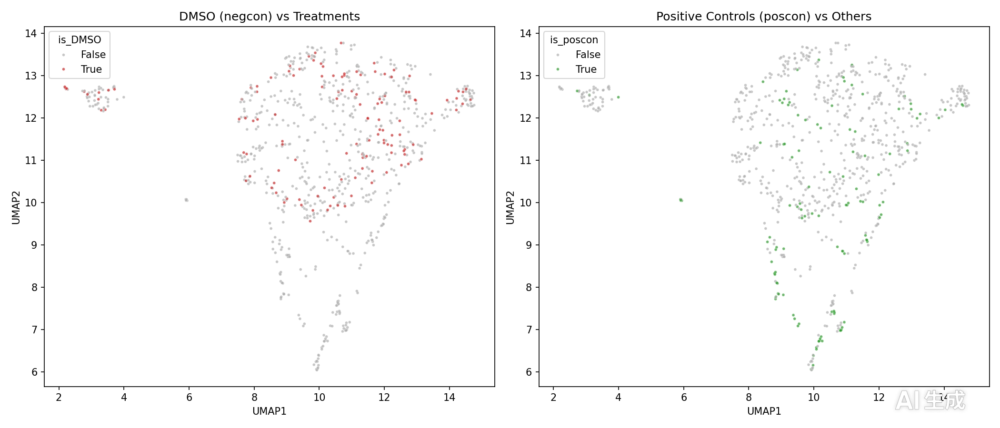
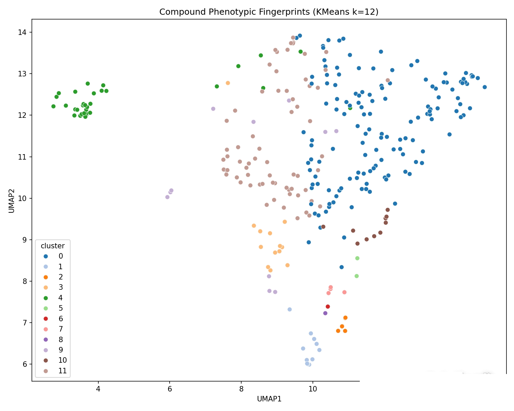
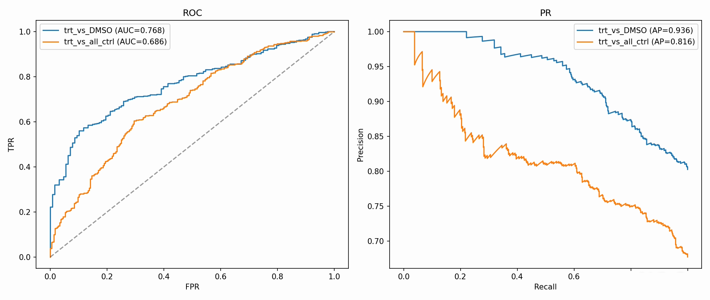
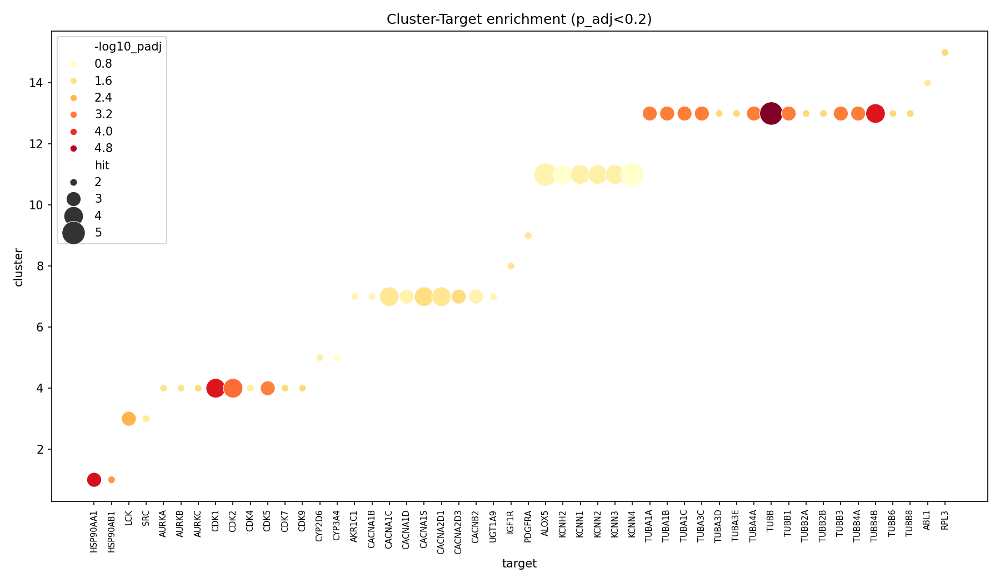
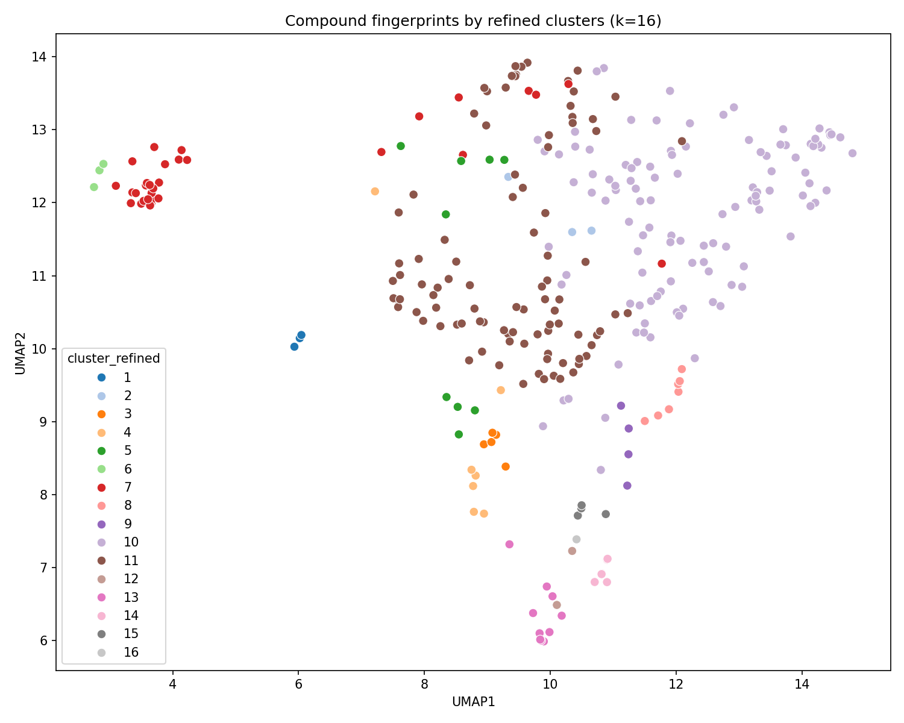
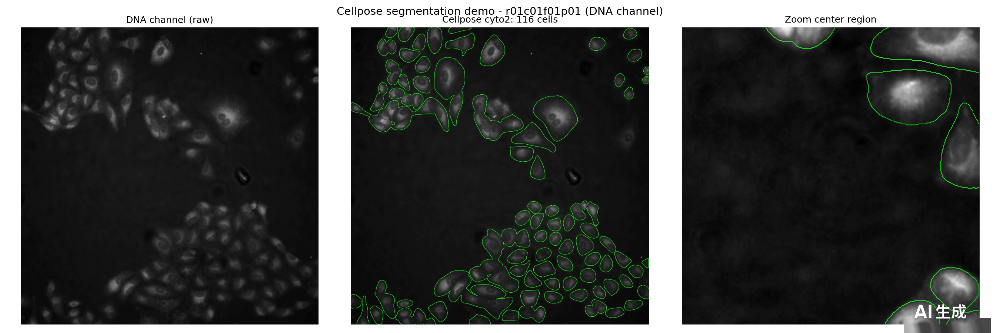
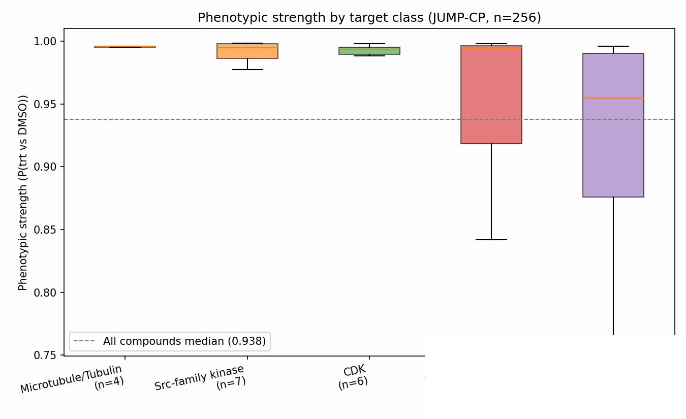

Pipeline: CellPainting profiles (904 features) → compound fingerprints → UMAP + KMeans clustering → XGBoost classification → Fisher enrichment → phenotypic strength scoring → Cellpose single-cell segmentation demo. Scripts 01–04 + one-command demo.py.
Narrated walkthrough of ShapeToTarget with English voice-over (en-US male voice, narration-only audio track, no background music; 146 seconds) and English caption cards: motivation (Organ-on-a-Chip phenotypic screening) → JUMP-Cell Painting data (768 wells, 904 features) → methods (structure-aware ECFP4, uncertainty quantification with calibration + conformal, deep embeddings) → live run demo (real pipeline stdout replay: input → workflow → output metrics, incl. Cellpose inference and stage-8 deep representation) → key results → reproducibility (open repo, 20-page technical report, GitHub Pages). All on-screen text is English (YouTube-ready, no Chinese): the live terminal replay shows English-translated logs of the real run with original metrics unchanged, marked "demo log (English translation of actual run)"; every figure segment pairs the chart with an English explanation panel (dark panel, white text, 2–4 key numbers such as Fig.03 AUC 0.9827, Fig.17 ECE 0.093 / conformal coverage 0.847). Figure segments are presented statically with fade transitions for a clean YouTube-ready look. No login required. Direct link: raw.githubusercontent.com







Self-contained interactive HTML (Plotly, opens offline): UMAP scatter, ROC curve, enrichment bubble chart, target-strength bars.
Open interactive_report.html · (~4.8 MB, no internet required)
git clone https://github.com/fakenice/ai4s-cell-painting-phenotyping pip install -r requirements.txt # optional data download (public S3, no sign-in) aws s3 cp --no-sign-request --recursive s3://cellpainting-gallery/cpg0000-jump-pilot/source_4/workspace/profiles/ data/profiles/ aws s3 cp --no-sign-request --recursive s3://cellpainting-gallery/cpg0000-jump-pilot/source_4/workspace/metadata/ data/metadata/ python demo.py # lightweight summary python demo.py --full # full pipeline 01 -> 04
docs/ folder. After pushing to GitHub, enable it in Settings → Pages → Deploy from a branch → select branch (e.g. master/main) / folder docs. Data: JUMP-CP CC BY 4.0 · ChEMBL CC BY-SA 3.0 · Code: MIT.